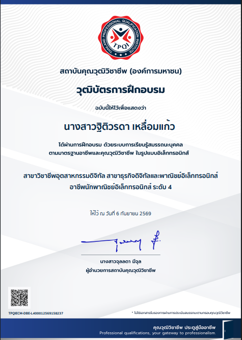

นางสาวฐิติวรดา เหลื่อมแก้ว
นักศึกษาระดับปริญญาตรี ผู้มีความสนใจด้านเทคโนโลยีดิจิทัล การออกแบบเว็บไซต์ และการพัฒนางานด้านธุรกิจดิจิทัล พร้อมเรียนรู้และพัฒนาทักษะจากการศึกษาและประสบการณ์การฝึกงาน
ข้อมูลส่วนตัว & ความสนใจ
ข้อมูลพื้นฐาน แนะนำตนเอง และแนวทางการพัฒนาตนเองในสายงานเทคโนโลยีธุรกิจดิจิทัล
นางสาวฐิติวรดา เหลื่อมแก้ว
นักศึกษาเทคโนโลยีธุรกิจดิจิทัล
เป้าหมายและความมุ่งมั่นในการเรียนรู้
ดิฉันเป็นนักศึกษาระดับปริญญาตรีที่มีความตั้งใจในการพัฒนาทักษะด้านเทคโนโลยีและธุรกิจดิจิทัลอย่างต่อเนื่อง โดยต่อยอดความรู้ตั้งแต่ระดับ ปวช., ปวส. จนถึงระดับปริญญาตรี มีพื้นฐานทั้งด้านการออกแบบสื่อดิจิทัล การสร้างเว็บไซต์ และการเข้าใจกระบวนการทำงานจริงจากการฝึกงาน
พร้อมเรียนรู้สิ่งใหม่
กระตือรือร้นในการศึกษาเครื่องมือและเทคโนโลยียุคใหม่อยู่เสมอ
ทำงานร่วมกับผู้อื่น
มีความรับผิดชอบต่อการทำงานกลุ่ม สื่อสารและรับฟังความคิดเห็น
ประยุกต์สู่ธุรกิจ
เชื่อมโยงเทคโนโลยีเข้ากับการบริหารจัดการธุรกิจและร้านค้าออนไลน์
เส้นทางการศึกษา Education Timeline
ลำดับการศึกษาตั้งแต่ระดับ ปวช., ปวส. จนถึงระดับปริญญาตรีในปัจจุบัน
ระดับ ประกาศนียบัตรวิชาชีพ (ปวช.)
ศึกษาและปูพื้นฐานความรู้ด้านคอมพิวเตอร์ธุรกิจ เทคโนโลยีดิจิทัลเบื้องต้น และการจัดทำเอกสารข้อมูลทางธุรกิจ พร้อมทั้งเข้าร่วมกิจกรรมและฝึกประสบการณ์วิชาชีพ
ระดับ ประกาศนียบัตรวิชาชีพชั้นสูง (ปวส.)
ศึกษาเชิงลึกด้านเทคโนโลยีธุรกิจดิจิทัล การออกแบบกราฟิก การพัฒนาและจัดการเว็บไซต์ การจัดการฐานข้อมูล และระบบการค้าพาณิชย์อิเล็กทรอนิกส์ (E-Commerce)
ระดับปริญญาตรี
มุ่งเน้นการต่อยอดทักษะการวิเคราะห์และพัฒนานวัตกรรมธุรกิจดิจิทัล การออกแบบประสบการณ์ผู้ใช้ (UI/UX) และการประยุกต์ใช้เทคโนโลยียุคใหม่สำหรับการทำงานจริง
การฝึกงาน Internship Experience
ประสบการณ์การฝึกประสบการณ์วิชาชีพจริงทั้งในหน่วยงานราชการและองค์กรธุรกิจเอกชน
กรมที่ดินนครศรีธรรมราช
- ปฏิบัติงานสนับสนุนงานสารบรรณและการจัดการเอกสารทางราชการ
- บันทึกและจัดระเบียบข้อมูลเข้าสู่ระบบคอมพิวเตอร์อย่างเป็นระเบียบถูกต้อง
- ตรวจสอบความถูกต้องของข้อมูลเอกสารและหลักฐานต่างๆ
- อำนวยความสะดวกและประสานงานบริการประชาชนที่มาติดต่อราชการ
บิ๊กซี ซูเปอร์เซ็นเตอร์ สาขาสะพานควาย
- ปฏิบัติงานสนับสนุนระบบการจัดการสินค้าและระบบงานหน้าร้านธุรกิจค้าปลีก
- ตรวจสอบรายการข้อมูลสต็อกสินค้าและระบบข้อมูลการจัดจำหน่าย
- เรียนรู้กระบวนการจัดหมวดหมู่สินค้าและระบบ POS (Point of Sale)
- ประสานงานกับทีมงานฝ่ายต่างๆ และสนับสนุนการให้บริการลูกค้า
ทักษะด้านดิจิทัล Skills & Tools
ความรู้และเครื่องมือที่ได้เรียนรู้และฝึกปฏิบัติจริงในระหว่างการศึกษา
Canva
Graphic & Mediaออกแบบสไลด์นำเสนอ โปสเตอร์ อินโฟกราฟิก และสื่อโปรโมตออนไลน์
Graphic Design
Design Skillหลักการจัดวางองค์ประกอบ การเลือกใช้คู่สี และการสื่อสารผ่านภาพ
ผลงาน Featured Achievement
คุณวุฒิวิชาชีพและผลงานที่ได้รับระหว่างการศึกษา

คุณวุฒิวิชาชีพคุณวุฒิวิชาชีพนักพาณิชย์อิเล็กทรอนิกส์ ระดับ 4
ได้รับคุณวุฒิวิชาชีพ สาขาวิชาชีพอุตสาหกรรมดิจิทัล สาขาธุรกิจดิจิทัลและพาณิชย์อิเล็กทรอนิกส์ อาชีพนักพาณิชย์อิเล็กทรอนิกส์ ระดับ 4
กิจกรรมและการมีส่วนร่วม Activities
ประสบการณ์การทำงานร่วมกับผู้อื่น การนำเสนอผลงาน และการเข้าร่วมอบรมทางวิชาการ
การทำงานกลุ่ม
ร่วมมือกับเพื่อนร่วมชั้นในการวางแผน แบ่งบทบาทหน้าที่ และพัฒนาโครงงานเทคโนโลยีสารสนเทศและธุรกิจดิจิทัลให้สำเร็จตามเป้าหมายของรายวิชา
การนำเสนอผลงาน
นำเสนอโครงงาน ผลงานเว็บไซต์ และแผนธุรกิจจำลองต่อหน้าอาจารย์ผู้สอนและเพื่อนในชั้นเรียน ฝึกฝนทักษะการพูด การสื่อสาร และการตอบข้อซักถาม
ช่องทางการติดต่อ Contact Information
สำหรับอาจารย์ผู้สอนหรือผู้สนใจ สามารถติดต่อสอบถามข้อมูลเพิ่มเติมได้ตามช่องทางด้านล่าง
นางสาวฐิติวรดา เหลื่อมแก้ว
ยินดีรับฟังคำแนะนำ ติชมผลงาน และพร้อมเปิดรับโอกาสในการเรียนรู้ใหม่ๆ เสมอค่ะ